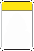
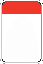

Weather Alerts
Posted alert notification are displayed at the top of the weather view page. Alert icons are of three categories.
- Advisory or statement.
- Watch
- Warning
Alert Icon Categories
| Icon |
Description |
|  |
Alert advisory |
|
Alert watch. |
|  |
Alert warning. |
Advisory Icons
Example Advisory Icons
| Icon |
Description |
 |
Coastal flood. |
 |
Ice storm. |
 |
Thunder storm. |
Watch Icons
Example Watch Icons
| Icon |
Description |
 |
Avalanche. |
 |
Fire weather. |
 |
High wind. |
Warning Icons
Example Warning Icons
| Icon |
Description |
 |
Hard freeze. |
 |
Lake shore flooding. |
 |
Red flag. |